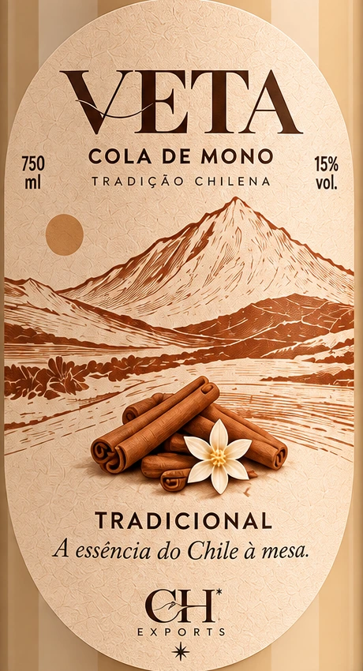

Visão
Ser uma empresa chilena reconhecida no mercado brasileiro pela comercialização de produtos de origem chilena, destacando-se por preservar sua qualidade, autenticidade e tradição e por fortalecer o vínculo entre a identidade chilena e os consumidores do Brasil.